Azure ポータル で BLOB を作成する
適用対象: ✔️ ストレージ アカウント
この演習では、Azure ポータル を使用して BLOB を作成します。
所要時間: 約 15 分
先行の演習
この演習を始める前に コンテナー を作成する を完了してください。
BLOB ＜ コンテナー ＜ ストレージ アカウント
Blob Storage は BLOB（Binary Large Object）を保存するサービスです。
BLOB はコンテナーに保存し、コンテナーは用途に応じて複数作成できます。
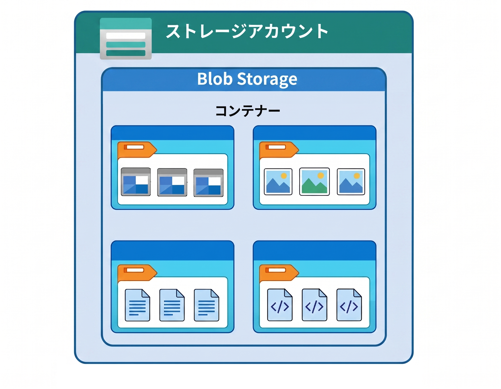
タスク 1: 仮想ディレクトリ の作成
仮想ディレクトリが単独で存在できないことを確認します。
- ポータルメニューから [ストレージ アカウント] を選択します。
storagev2msaz1を選択します。- サービスメニューから データ ストレージ ＞ [コンテナー] を選択します。
storage-containerを選択します。- [＋ ディレクトリの追加] を選択します。
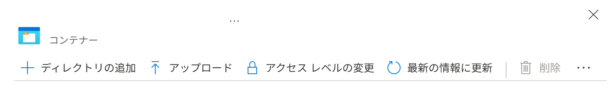
directoryを入力して、[OK] を選択します。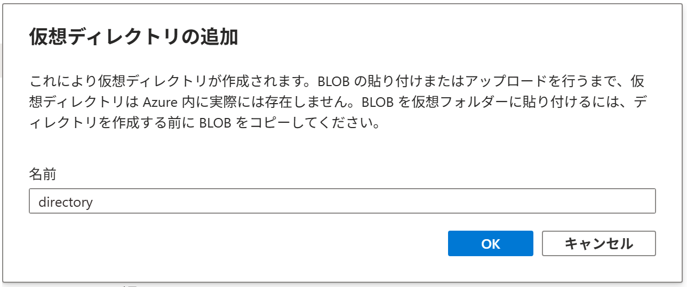
- [..] を選択します。
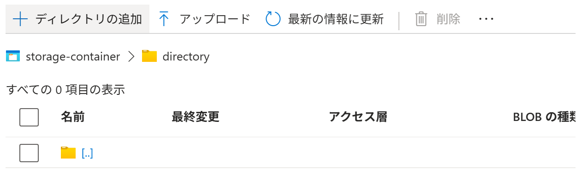
- 項目が見つかりませんでした を確認します。
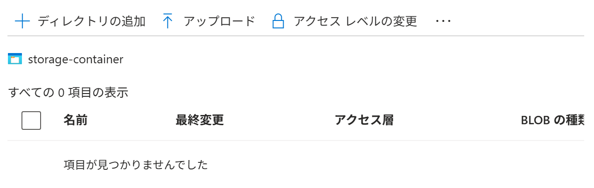
- 作成したディレクトリが消失しました。
ストレージアカウントは、通常はフラットな名前空間で BLOB を管理します。
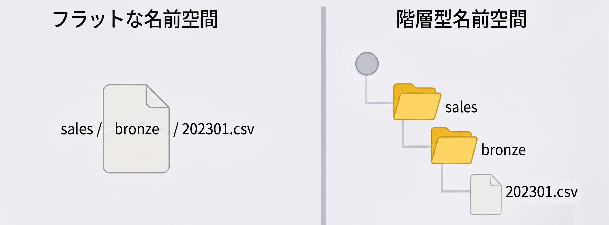
フラットな名前空間では、仮想ディレクトリは本物のディレクトリではなく、BLOB 名の先頭部分をディレクトリっぽく見せているだけです。 そのため、その名前で始まる BLOB が 1 つもなければ、表示する材料がなくなり、仮想ディレクトリだけを単独では置いておけません。
| フラットな名前空間 | 階層型名前空間 |
|---|---|
| データをディレクトリ階層ではなく、平らな名前の集合として扱う方式。 名前に / を含んでいても実体としてのディレクトリではない。 |
データをファイルシステムのように、ディレクトリ階層で管理できる方式。 |
タスク 2: BLOB の作成
BLOB を作成します。
- ポータルメニューから [ストレージ アカウント] を選択します。
storagev2msaz1を選択します。- サービスメニューから データ ストレージ ＞ [コンテナー] を選択します。
storage-containerを選択します。- [↑ アップロード] を選択します。
- [▽ 詳細] を選択します。
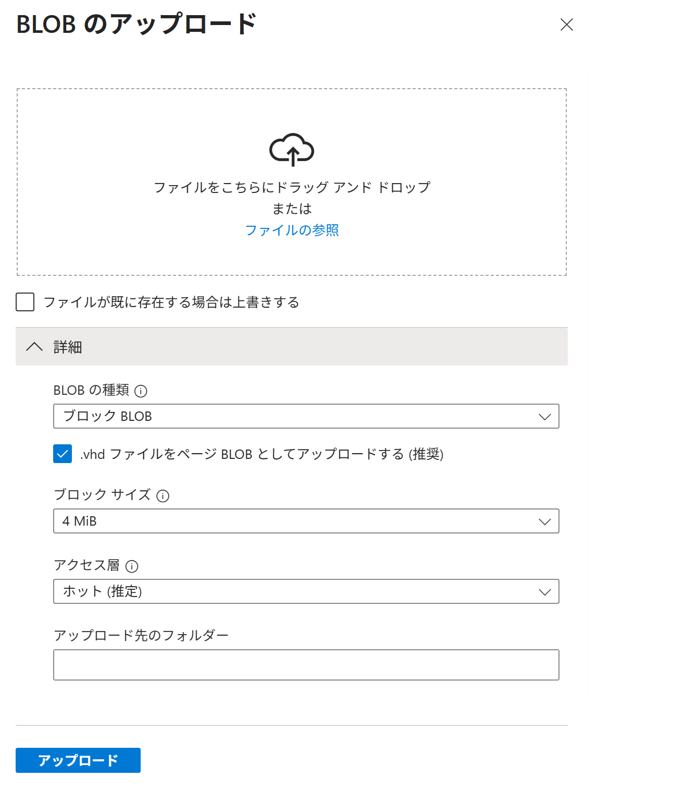
- BLOB の種類 で [ブロック BLOB] を選択します。
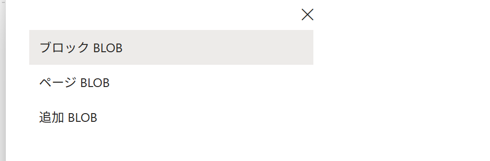
- アクセス層 で [ホット (推定)] を選択します。
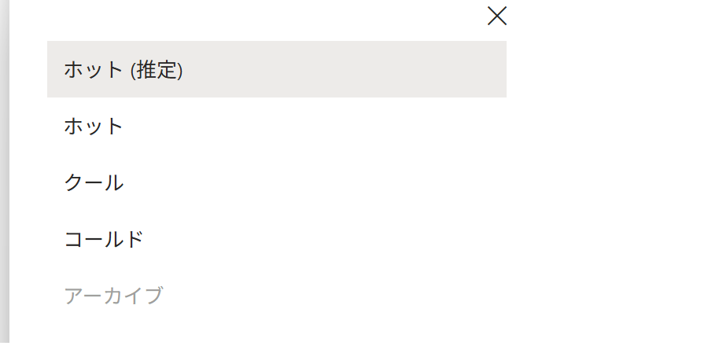
選べる選択肢は変動します。クール / コールド / アーカイブは BLOB をすぐに削除してもコストが発生します（最低利用料金のようなもの）。 - アップロード先のフォルダー で
virtual-directoryを入力します。 - [ファイルの参照] を選択します。
- 任意の画像ファイル を選択して [開く] を選択します。
- [ファイルが既に存在する場合は上書きする] のチェックボックスにチェックを入れます。
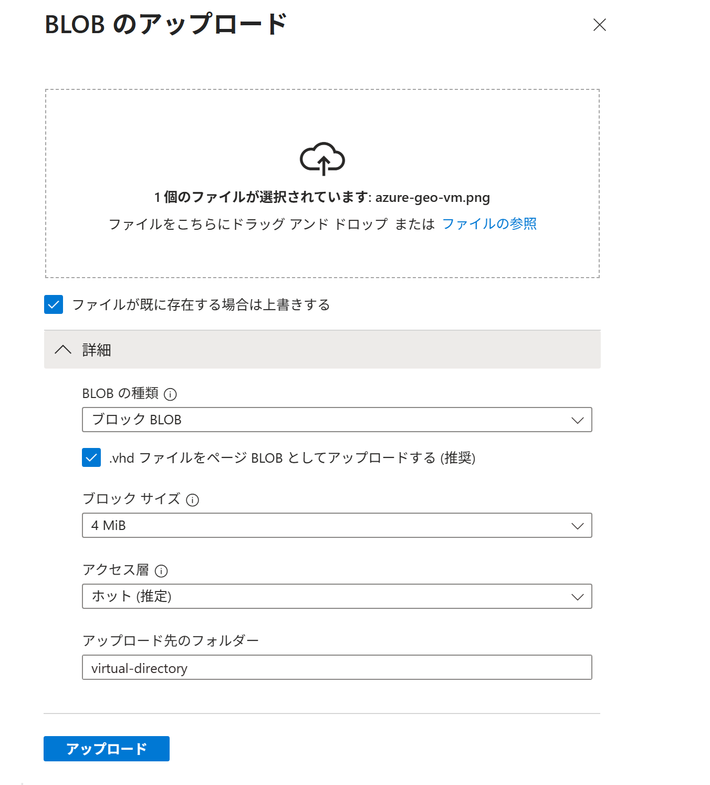
- [アップロード] を選択します。
- 完了を待ちます。
virtual-directoryが一覧に表示されることを確認します。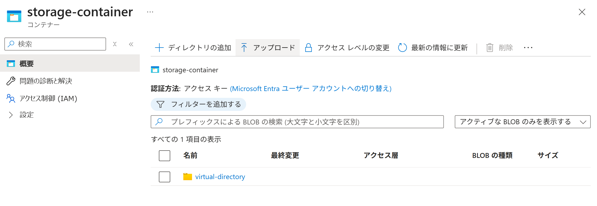
virtual-directoryを選択します。- アップロードしたファイルのファイル名 が一覧に表示されることを確認します。
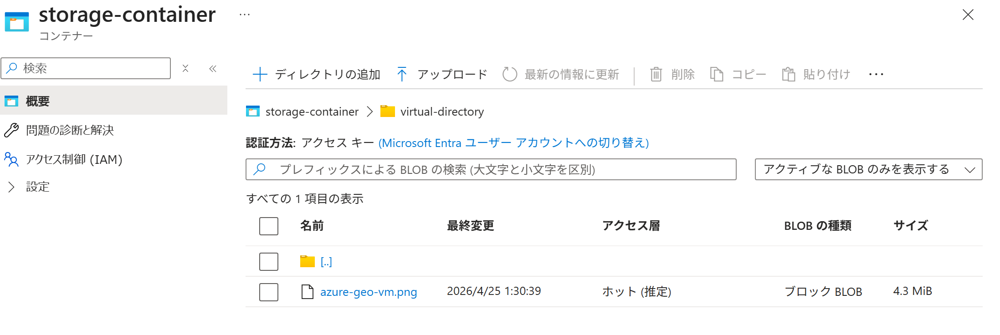
- BLOB の種類 と アクセス層 を確認します。
タスク 3: 作成されたリソースの確認
BLOB にインターネット経由でアクセスできないことを確認します。
- ポータルメニューから [ストレージ アカウント] を選択します。
storagev2msaz1を選択します。- サービスメニューから データ ストレージ ＞ [コンテナー] を選択します。
storage-containerを選択します。- 前のタスクで
アップロードしたファイルを選択します。 - URLの 右端の [コピー] ボタン を選択します。
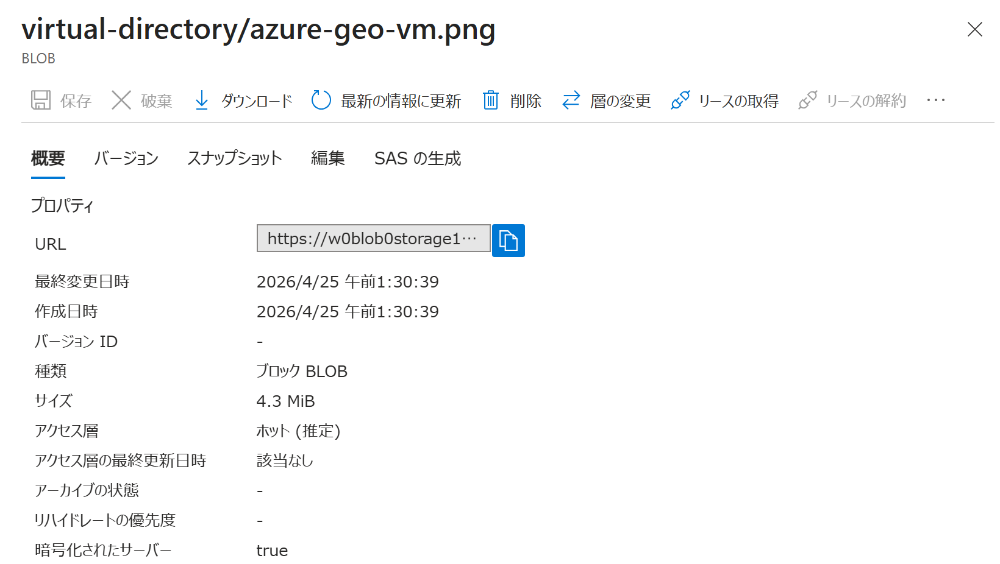
https://storagev2msaz1.blob.core.windows.net/storage-container/virtual-directory/azure-geo-vm.png - ブラウザで新しいタブを開いてコピーしたURLをアドレスバーに貼り付けます。
- アップロードした画像ファイルが表示されないことを確認します。（BLOB 匿名アクセスの許可 が 無効 のためです）
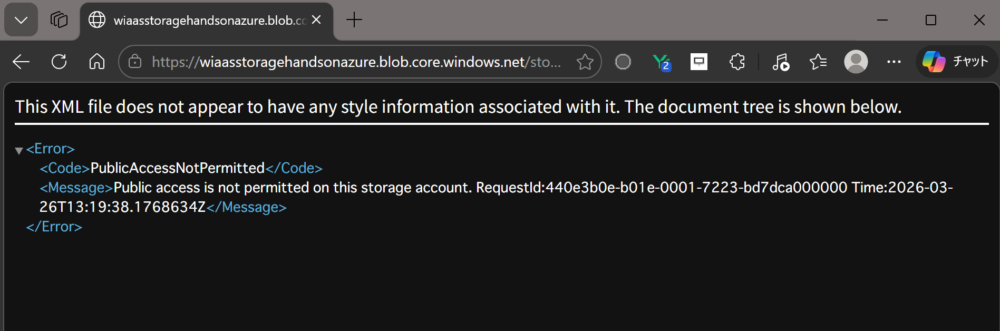
匿名アクセス マトリクス表
ストレージアカウントの設定が コンテナーの設定よりも優先されます。
- ストレージアカウントが 匿名アクセスを無効にする場合、すべてのコンテナーは 匿名アクセス無効
- ストレージアカウントが 匿名アクセスを有効にする場合、コンテナーごとに 匿名アクセスレベルを選択可能